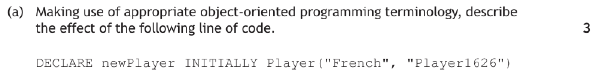
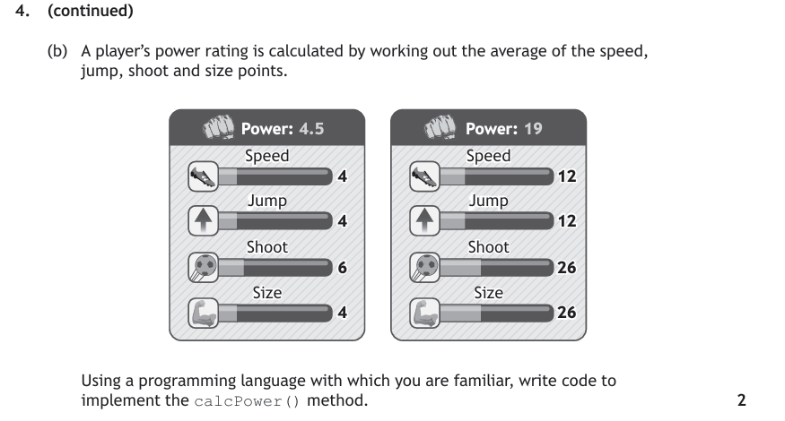
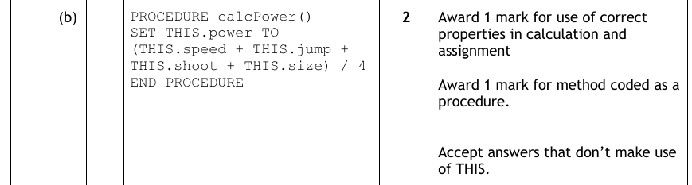
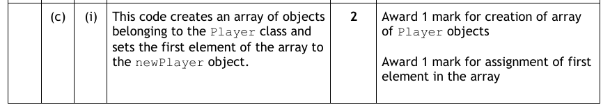
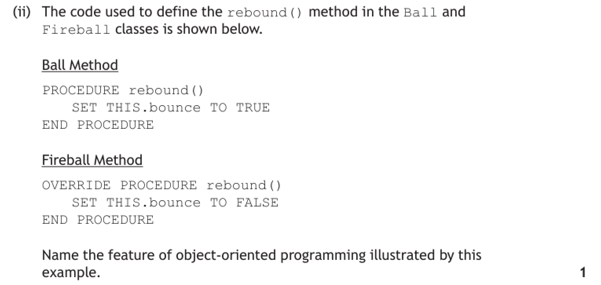
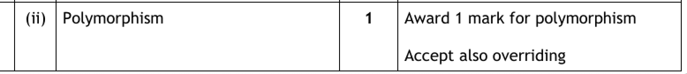

Object-Oriented Design & Programming
Every program you have written so far has been organised around what happens — a sequence of steps, broken into procedures and functions, operating on data that is passed around between them. Object-oriented programming organises a program around what things are instead.
The data and the operations that belong to one real-world thing are bundled together into a single unit — an object. A library book knows its own title, and knows how to be borrowed. Nothing outside the book needs to reach in and change it. As programs grow, that matters enormously: it limits how far a mistake in one part of a program can spread, and it lets whole categories of thing be described once and reused.
The pattern is always the same. You write a class — a blueprint describing what every thing of that kind knows and can do — and the program then creates as many objects from it as it needs. This page builds one class from nothing, then uses it to demonstrate each principle in turn.
You must be able to describe, exemplify and implement every construct on this page.
Key Terms
Say it the way the marker expects
Before anything else, learn to narrate code in the right register. Every row below describes the same line — only the right-hand column earns marks:
| Everyday wording — no marks | Object-oriented terminology — the marks |
|---|---|
| "It makes a new book." | It instantiates an object of the Book class. |
| "It fills in the values." | The constructor assigns the values passed as parameters to the object's instance variables. |
| "Book has stuff in it." | The Book class defines four instance variables and four methods. |
| "Dvd copies Book." | Dvd is a sub-class that inherits the instance variables and methods of the LibraryItem super-class. |
| "It uses its own version." | The sub-class overrides the inherited method, which is an example of polymorphism. |
| "You can't get at it." | The instance variable is private, so it is encapsulated and can only be reached through a public method. |
OO Terminology Trainer
Ten questions on the wording itself. Each shows a line of code and four descriptions of it — only one uses the terminology that would score. Only your first answer counts, and the feedback explains why each of the other three falls short.
Building a Class Step by Step
A local library needs to keep track of its stock. We will build the class it needs from nothing, one idea at a time. Each stage adds only the gold lines.
Stage 1 — the class
Start by asking what kind of thing is this program about? Books. So the program needs a class called Book. A class is a blueprint: it is not itself a book, it is the description of what every book will be. Writing it down defines the instance variables — the data each book must hold:
CLASS Book IS { STRING title, STRING author, STRING isbn, BOOLEAN onLoan }END CLASSThat is a complete, legal class. It holds four instance variables, each with a name and a data type. Notice onLoan — a book is not just its printed details, it also has a state that the program needs to track.
Stage 2 — objects
The class exists, but no books do yet. An object is one actual book, created from the blueprint and holding its own values. A library with three books on the shelf has one class and three objects:
![On the left, a class box headed Book described as a blueprint, listing the instance variables STRING title, STRING author, STRING isbn and BOOLEAN onLoan, with a note that it holds no values yet and only defines the shape. Three green arrows labelled instantiation run from the class to three object boxes on the right. The first, copy1 of Book, holds title Sunset Song, author Lewis Grassic Gibbon and onLoan FALSE. The second, copy2 of Book, holds the same title and author but is highlighted in gold with onLoan TRUE. The third, gatherers of Book, holds title The Cone-Gatherers, author Robin Jenkins and onLoan FALSE. A note explains that copy1 and copy2 hold identical values but are still two separate objects, each with its own onLoan, so one copy can be on loan while the other sits on the shelf.](../resources/sdd/oo-class-vs-objects.svg)
copy1 and copy2 above: identical values, but two separate objects — because each has its own onLoan, one copy can be out on loan while the other is on the shelf.Stage 3 — instance variables and the constructor
Something has to give those instance variables their values at the moment an object is created. That is the job of the constructor — a special method that runs automatically during instantiation.
Two details matter. First, the constructor takes parameters for the values that differ from book to book, and assigns them. Second, it can set values that are the same for every new object — every book starts off not on loan, so onLoan is initialised to FALSE rather than being passed in:
CLASS Book IS { STRING title, STRING author, STRING isbn, BOOLEAN onLoan } METHODS CONSTRUCTOR (STRING title, STRING author, STRING isbn) DECLARE THIS.title INITIALLY title DECLARE THIS.author INITIALLY author DECLARE THIS.isbn INITIALLY isbn DECLARE THIS.onLoan INITIALLY FALSE END CONSTRUCTOREND CLASSTHIS means "the object this method was called on". Inside the constructor, title is the parameter that was passed in and THIS.title is the instance variable belonging to the object being built. They are deliberately given the same name, and THIS is what tells them apart. Python's equivalent is self.Stage 4 — methods
An object that only holds data is just a record. What makes it an object is that it also holds the methods that operate on that data. Ask what a book has to be able to do: be borrowed, be returned, and report its details.
Methods come in the two forms you already know — a procedure when it performs an action and returns nothing, and a function when it returns a value:
CLASS Book IS { STRING title, STRING author, STRING isbn, BOOLEAN onLoan } METHODS CONSTRUCTOR (STRING title, STRING author, STRING isbn) DECLARE THIS.title INITIALLY title DECLARE THIS.author INITIALLY author DECLARE THIS.isbn INITIALLY isbn DECLARE THIS.onLoan INITIALLY FALSE END CONSTRUCTOR PROCEDURE borrow() SET THIS.onLoan TO TRUE END PROCEDURE PROCEDURE returnItem() SET THIS.onLoan TO FALSE END PROCEDURE FUNCTION getTitle() RETURNS STRING RETURN THIS.title END FUNCTION FUNCTION isOnLoan() RETURNS BOOLEAN RETURN THIS.onLoan END FUNCTIONEND CLASSThe same class in Python. The structure is identical — only the syntax changes:
class Book:
def __init__(self, title, author, isbn): # the constructor
self.__title = title # __ marks it private
self.__author = author
self.__isbn = isbn
self.__on_loan = False
def borrow(self):
self.__on_loan = True
def return_item(self):
self.__on_loan = False
def get_title(self):
return self.__title
def is_on_loan(self):
return self.__on_loanisOnLoan() rather than just reading onLoan? Because the instance variables are private. Code outside the class cannot touch them, so the class provides a public getter to hand the value out safely. That is the next section — and it is the single most commonly examined idea on this page.The Four Principles
The class is built. Everything that follows is about using it — and each of the four ideas below is a named, examinable principle.
Instantiation — creating an object
Instantiation is the act of creating an object from a class. One line does it, and being able to narrate that line precisely is worth three marks in the worked example below:
DECLARE copy1 INITIALLY Book("Sunset Song", "Lewis Grassic Gibbon", "9781847674463")
copy1.borrow() # calls a method on the object
SEND copy1.getTitle() TO DISPLAY # displays: Sunset Song
SEND copy1.isOnLoan() TO DISPLAY # displays: TRUEcopy1 = Book("Sunset Song", "Lewis Grassic Gibbon", "9781847674463")
copy1.borrow()
print(copy1.get_title())
print(copy1.is_on_loan())Book class, referred to by the variable copy1. The constructor is called with three actual parameters, which it assigns to the title, author and isbn instance variables; the remaining instance variable onLoan is initialised to FALSE by the constructor code." That is a full-mark answer, and the exam question is worded almost exactly like this.Objects are reached by dot notation: the object name, a full stop, then the method being called. Every object made from Book has its own copy of the instance variables, so copy1.borrow() has no effect whatsoever on copy2.
Instantiation Stepper
Step through the Book constructor one line at a time and watch each instance variable being assigned — including onLoan, which is never passed in. Then instantiate a second object and press borrow() on one of them to see how independent the two really are.
Encapsulation — the object protects its own data
Encapsulation is the bundling of instance variables and the methods that act on them into a single unit — the class — and then restricting access to that data from outside:
- Private (−) — reachable only from inside the class that owns it;
- Public (+) — reachable from anywhere in the program.
The convention is to make instance variables private and methods public. The data is then sealed inside the object, and the only way in is through the methods the class chooses to expose:
![On the left a grey box labelled the rest of the program contains two lines of code: myBook.borrow() shown in green, and SET myBook.onLoan TO TRUE shown in red. On the right a large box represents the object myBook of class Book. Along its top sit four green boxes labelled plus public methods, the way in: borrow, returnItem, getTitle and isOnLoan. Inside the object, a gold box holds the minus private instance variables title, author, isbn and onLoan, annotated as reachable only from inside the class. A green arrow labelled allowed runs from the program to the borrow method and on into the private data. A red dashed arrow labelled blocked, private runs from the program directly at the private data and is marked with a cross. A note explains that a public method may change a private variable because it is defined inside the class, while code outside the class cannot, which is why a line such as SET myBook.onLoan TO TRUE fails.](../resources/sdd/oo-encapsulation.svg)
copy1.borrow() # allowed — borrow() is a public method of Book
# and it changes onLoan from inside the class
SET copy1.onLoan TO TRUE # NOT allowed — onLoan is a private instance
# variable, so code outside Book cannot reach itMethods that exist purely to reach private data have names: a getter retrieves a value, a setter changes one. Writing a setter rather than exposing the variable directly means the class can validate the change first:
PROCEDURE setPages(INTEGER newPages)
IF newPages > 0 THEN
SET THIS.pages TO newPages
END IF
END PROCEDUREclass Book:
def __init__(self, title):
self.__title = title # private
def get_title(self): # getter — the public way in
return self.__title
my_book = Book("Sunset Song")
print(my_book.get_title()) # allowed
print(my_book.__title) # AttributeError — it is privateInheritance — writing shared behaviour once
The library does not only lend books. It also lends DVDs. A DVD has a title, an ISBN and a loan state, exactly as a book does — but instead of an author and a page count it has a director and an age rating.
Copying the Book class and editing it would duplicate the shared parts, and any later fix would have to be made twice. Inheritance solves this: pull everything shared into a general super-class, then define each specialised type as a sub-class that inherits it and adds only what is different.
CLASS LibraryItem IS { STRING title, STRING isbn, BOOLEAN onLoan }
METHODS
CONSTRUCTOR (STRING title, STRING isbn)
DECLARE THIS.title INITIALLY title
DECLARE THIS.isbn INITIALLY isbn
DECLARE THIS.onLoan INITIALLY FALSE
END CONSTRUCTOR
PROCEDURE borrow()
SET THIS.onLoan TO TRUE
END PROCEDURE
PROCEDURE returnItem()
SET THIS.onLoan TO FALSE
END PROCEDURE
FUNCTION getTitle() RETURNS STRING
RETURN THIS.title
END FUNCTION
FUNCTION getLoanPeriod() RETURNS INTEGER
RETURN 21
END FUNCTION
END CLASSCLASS Book INHERITS LibraryItem WITH { STRING author, INTEGER pages }
METHODS
FUNCTION getAuthor() RETURNS STRING
RETURN THIS.author
END FUNCTION
END CLASS
CLASS Dvd INHERITS LibraryItem WITH { STRING director, INTEGER ageRating }
METHODS
FUNCTION getDirector() RETURNS STRING
RETURN THIS.director
END FUNCTION
END CLASSclass LibraryItem:
def __init__(self, title, isbn):
self.__title = title
self.__isbn = isbn
self.__on_loan = False
def borrow(self):
self.__on_loan = True
def get_loan_period(self):
return 21
class Book(LibraryItem):
def __init__(self, title, isbn, author, pages):
super().__init__(title, isbn) # run the super-class constructor first
self.__author = author
self.__pages = pagesWhat a sub-class object actually holds. A Book object has five instance variables — its own author and pages, plus the inherited title, isbn and onLoan — without those three being written again. It can also be sent every inherited method:
DECLARE copy1 INITIALLY Book("Sunset Song", "9781847674463", "Lewis Grassic Gibbon", 256)
copy1.borrow() # inherited from LibraryItem
SEND copy1.getTitle() TO DISPLAY # inherited from LibraryItem
SEND copy1.getAuthor() TO DISPLAY # Book's own methodPolymorphism — one method name, several behaviours
Books are lent for three weeks, but DVDs only for one. getLoanPeriod() is inherited from LibraryItem and returns 21 — correct for a book, wrong for a DVD.
The sub-class fixes this by overriding the inherited method: defining its own version, with the same name, which replaces the inherited one for objects of that sub-class. In reference language the keyword OVERRIDE marks it explicitly:
CLASS Dvd INHERITS LibraryItem WITH { STRING director, INTEGER ageRating }
METHODS
OVERRIDE FUNCTION getLoanPeriod() RETURNS INTEGER
RETURN 7
END FUNCTION
END CLASSclass Dvd(LibraryItem):
def get_loan_period(self): # same name — this overrides the inherited version
return 7Now the same call produces different behaviour depending on the class of the object it is sent to — and that is polymorphism:
DECLARE aBook INITIALLY Book("Sunset Song", "9781847674463", "Lewis Grassic Gibbon", 256)
DECLARE aDvd INITIALLY Dvd("Local Hero", "5051892021", "Bill Forsyth", 12)
SEND aBook.getLoanPeriod() TO DISPLAY # displays 21 — the inherited version
SEND aDvd.getLoanPeriod() TO DISPLAY # displays 7 — Dvd's overriding versionitem.getLoanPeriod() on every item it is given, without knowing or caring whether each one is a book or a DVD — the correct version runs automatically. That is exactly why polymorphism is worth having, and it is what a "why is this useful" question is fishing for.OVERRIDE, or shows the same method name in a super-class and a sub-class, the answer it wants is polymorphism (marking instructions also accept overriding).Polymorphism Dispatcher
One array holds a mixture of Book and Dvd objects. Send the same call to each and watch which class’s version runs. Compare an overridden method with one that is merely inherited — and see what happens when a method defined only in one sub-class is sent to the other.
Arrays of Objects
One Book object is a single book. A library needs thousands, so the objects are stored in an array of objects — an array whose elements are objects created from a class.
It is the direct object-oriented equivalent of Higher's array of records, and the access pattern is almost identical. The difference is what you find at each index: a record hands you data, an object hands you data and methods.
| Array of records | Array of objects | |
|---|---|---|
| Element holds | Named fields of data | An object — its instance variables and its methods |
| Reading a value | stock[3].price — direct field access | stock[3].getPrice() — through a public method |
| Protection | Any code can change any field | Encapsulated — only the class's own methods can change the data |
| Mixed types in one array | All elements the same record type | Objects of a super-class and any of its sub-classes can share one array |
Declaring and populating
Declare the array as ARRAY OF the class name. Until objects are put into it, every element holds Null — the array of empty slots exists, but no objects do:
# 500 empty slots, each able to hold a LibraryItem object
DECLARE catalogue AS ARRAY OF LibraryItem INITIALLY [Null] * 500
DECLARE numItems INITIALLY 0
# instantiate an object and store it in the array
SET catalogue[0] TO Book("Sunset Song", "9781847674463", "Lewis Grassic Gibbon", 256)
SET numItems TO numItems + 1
SET catalogue[1] TO Dvd("Local Hero", "5051892021", "Bill Forsyth", 12)
SET numItems TO numItems + 1catalogue = []
catalogue.append(Book("Sunset Song", "9781847674463", "Lewis Grassic Gibbon", 256))
catalogue.append(Dvd("Local Hero", "5051892021", "Bill Forsyth", 12))DECLARE catalogue AS ARRAY OF LibraryItem … creates the array; SET catalogue[0] TO Book(…) instantiates an object and assigns it to an element. A two-mark "explain the purpose of this code" question is usually one mark for each — exactly as in part (c)(i) of the worked example below.Traversing — calling a method on every object
The pattern is index selects the object, dot notation selects the method: catalogue[index].getTitle(). Everything you know about traversing arrays transfers straight across:
FOR index FROM 0 TO numItems - 1 DO
SEND catalogue[index].getTitle() TO DISPLAY
END FORBecause a sub-class object can be stored wherever a super-class object is expected, one array can hold a mixture of Book and Dvd objects — and a single loop then produces the polymorphic behaviour from the previous section automatically:
# catalogue holds a mixture of Book and Dvd objects
FOR index FROM 0 TO numItems - 1 DO
SEND catalogue[index].getTitle() & " may be kept for " &
catalogue[index].getLoanPeriod() & " days" TO DISPLAY
END FOR
# each element runs the version of getLoanPeriod() belonging to its own class:
# a Book returns 21, a Dvd returns 7 — the loop never has to ask which it hasCounting and searching
A count occurrences over an array of objects tests a property by calling its getter:
DECLARE onLoanCount INITIALLY 0
FOR index FROM 0 TO numItems - 1 DO
IF catalogue[index].isOnLoan() = TRUE THEN
SET onLoanCount TO onLoanCount + 1
END IF
END FOR
SEND onLoanCount & " items are currently on loan" TO DISPLAYA linear search stores the index of the object it finds, not a copy of one field — because once you have the index, every method of that object is available to you:
FUNCTION findByTitle(STRING searchTitle) RETURNS INTEGER
DECLARE foundAt INITIALLY -1
DECLARE index INITIALLY 0
WHILE index < numItems AND foundAt = -1 DO
IF catalogue[index].getTitle() = searchTitle THEN
SET foundAt TO index
END IF
SET index TO index + 1
END WHILE
RETURN foundAt
END FUNCTION
# having the index means having the whole object
DECLARE position INITIALLY findByTitle("Local Hero")
IF position <> -1 THEN
catalogue[position].borrow()
END IFSorting by a property
Every standard algorithm works on an array of objects. The only change is the comparison: instead of comparing elements directly, compare the value returned by a getter, and swap the whole objects:
FOR index FROM 0 TO numItems - 2 DO
IF catalogue[index].getLoanPeriod() < catalogue[index + 1].getLoanPeriod() THEN
DECLARE temp INITIALLY catalogue[index]
SET catalogue[index] TO catalogue[index + 1]
SET catalogue[index + 1] TO temp
END IF
END FORIF catalogue[index] < catalogue[index + 1] is meaningless, because an object is not a number; you must compare a property, and with private instance variables that means calling its getter. Second, swapping only the sorted-on value instead of the whole object, which detaches every item from its own data. Part (c)(ii) of the worked example below is precisely this question.Library object holding a catalogue — the methods above become methods of that class, and refer to it as THIS.catalogue[index]. The class diagram below shows exactly that arrangement.UML Class Diagrams
A UML class diagram models the static structure of an object-oriented program — which classes exist, what each holds and can do, and how they relate. It is the design notation for OO, and it is covered as a design technique on the Design page. This is the recap you need in order to answer the questions below.
Each class is a box in three parts:
- the class name;
- its instance variables, written
name: DataType; - its methods, written
name().
A − in front of a member means private and a + means public — so a well-designed class shows − on the instance variables and + on the methods. Inheritance is drawn as a solid arrow from the sub-class pointing at the super-class.
Here is the whole library example as one diagram — the same classes built up throughout this page:
![A UML class diagram with four classes. Library holds private catalogue as an Array of LibraryItem and numItems as Integer, with public methods Library, addItem, findByTitle and countOnLoan. A gold arrow labelled array of objects runs from Library to LibraryItem. LibraryItem, the super-class, holds private title as String, isbn as String and onLoan as Boolean, with public methods LibraryItem, borrow, returnItem, isOnLoan and getLoanPeriod. Below it are two sub-classes. Book holds private author as String and pages as Integer with public methods Book and getAuthor. Dvd holds private director as String and ageRating as Integer with public methods Dvd, getDirector and getLoanPeriod, which is marked as an override because a DVD lends for 7 days. Solid arrows run from Book and Dvd up to LibraryItem, labelled inheritance, the arrow points at the super-class. A note explains that a Book object holds five instance variables, its own author and pages plus title, isbn and onLoan inherited from LibraryItem, and that Dvd redefines getLoanPeriod so the same call behaves differently on each class.](../resources/sdd/oo-library-class-diagram.svg)
Reading it like an examiner
Four things a class diagram tells you that questions are built on:
- Which class is the super-class — follow the arrowheads. Everything they point at is inherited by everything they point from.
- How many instance variables an object really has — a
Bookobject has five, not two: its ownauthorandpagesplus the three inherited fromLibraryItem. Diagrams never repeat inherited members in the sub-class box. - Where polymorphism is happening — the same method name appearing in both a super-class and a sub-class means the sub-class overrides it.
getLoanPeriod()above is the giveaway. - Where an array of objects is — an instance variable typed
Array of <ClassName>, hereLibrary'scatalogue. It means one object contains many objects of another class.
Class Diagram ↔ Code
Click any class, instance variable or method to see the code it stands for, or click a line of code to find it in the diagram. Switching on inherited members reveals what the diagram deliberately leaves out — and answers “how many instance variables does a Book object really have?”
Worked Example — 2022 Question 4
A 12-mark question that works through almost everything on this page: instantiation, implementing a method, an array of objects, sorting objects by a property, inheritance and polymorphism. Each part is walked through, then a full sample answer is given.
Two of the parts below are not from the original paper — they are clearly marked, and cover encapsulation and the procedure/function decision, which this scenario sets up perfectly but the paper did not ask about.
The scenario and the Player class diagram:
![2022 Question 4. A game is being developed where the player controls a footballer, playing against an online opponent. When the game is played for the first time, a player must provide a nationality and a username. A new player starts with 1 point for their speed, jump, shoot, size and power characteristics. By winning games, players can gain extra points in each of these characteristics. A simplified UML class diagram for a Player object is shown, with private instance variables speed, jump, shoot and size as Integer, power as Real, and nationality and username as String, and public methods updateSpeed, updateJump, updateShoot, updateSize, calcPower, getUsername and getPower.](../resources/sdd/worked-examples/ah_oo_q1-1.png)
The class declaration code:
![Question 4 continued. The class declaration code reads CLASS Player IS with INTEGER speed, INTEGER jump, INTEGER shoot, INTEGER size, INTEGER real, STRING nationality and STRING username. Under METHODS there is a CONSTRUCTOR taking STRING nationality and STRING username which declares THIS.speed, THIS.jump, THIS.shoot, THIS.size and THIS.power all initially 1, THIS.nationality initially nationality and THIS.username initially username. A PROCEDURE updateSpeed sets THIS.speed to THIS.speed plus 1. A FUNCTION getUsername returns THIS.username as a STRING. A FUNCTION getPower returns THIS.power as a REAL. The listing ends with END CLASS.](../resources/sdd/worked-examples/ah_oo_q1-2.png)
Orient yourself before reading any part. Match the class diagram against the code and note three things. The class has seven instance variables, all private. It has a constructor taking only two parameters — nationality and username — because every other value starts at 1 for a brand-new player. And getUsername() and getPower() are getters: the only way anything outside the class can read those private values.
a Describe the effect of a line of code, using OO terminology 3 marks

Three marks for one line means three separate things to say. The wording "making use of appropriate object-oriented programming terminology" is the examiner telling you outright that the vocabulary is what is being marked. Work through the line left to right and name what each part does.
1What is being created?
Player(…) calls the constructor of the Player class, so an object — an instance of that class — is created and referred to by newPlayer. Say instantiates, not "makes".
2What happens to the values in brackets?
The two actual parameters "French" and "Player1626" are passed to the constructor, which assigns them to the nationality and username instance variables.
3What about the other five instance variables?
This is the mark most candidates miss. Look back at the constructor code: speed, jump, shoot, size and power are not parameters — the constructor initialises them all to 1, matching the scenario's statement that a new player starts with 1 point in each characteristic.
Note the marking instruction's warning: simply listing the assigned values, with none of the terminology, is capped at 1 mark.
Sample Answer
"This line instantiates a new object of the Player class, which is referred to by the variable newPlayer."
"The constructor is called with the two actual parameters "French" and "Player1626", which it assigns to the nationality and username instance variables of the new object."
"The remaining instance variables — speed, jump, shoot, size and power — are not passed in; the constructor code initialises each of them to 1."
Marking Instructions
![Marking instructions for 2022 Question 4(a). The answer states that this code is instantiating a new object of the Player class, that it will assign the nationality and username using the parameters provided, and that the constructor code will assign the value 1 to all other properties. Award 1 mark for creation of new object or instance of the Player class, 1 mark for instantiating the object by assigning values, and 1 mark for assignment details. Note: list of assigned values on its own, award 1 mark only.](../resources/sdd/worked-examples/ah_oo_q1-3_ans.png)
b Implement the calcPower() method 2 marks

Check the rule against the pictures first. The average of 4, 4, 6 and 4 is 4.5, and of 12, 12, 26 and 26 is 19. So power is the mean of four characteristics — speed, jump, shoot and size. power itself is not part of the calculation, which is easy to get wrong given it sits in the same list of instance variables.
1Procedure or function?
Look at the class diagram: calcPower() and getPower() are both listed. The class already has a getter, so calcPower() is not there to return the value — it is there to update the power instance variable. That makes it a procedure, and the marking instructions award a mark specifically for that.
2Which variables, and how do you reach them?
It is working on the object's own data, so every one is reached through THIS. The result is assigned back to THIS.power:
SET THIS.power TO (THIS.speed + THIS.jump + THIS.shoot + THIS.size) / 4The brackets are essential — without them only THIS.size is divided by 4. Note also that the marking instructions accept answers that do not use THIS, so a Python answer using self, or one that names the variables directly, is fine.
Sample Answer
PROCEDURE calcPower()
SET THIS.power TO (THIS.speed + THIS.jump + THIS.shoot + THIS.size) / 4
END PROCEDUREWhere the two marks are: using the correct properties in the calculation and assigning the result, and coding the method as a procedure.
Marking Instructions

c i Explain the purpose of code creating an array of objects 2 marks

Two lines, two marks — take them one at a time. Do not blur them into a single sentence such as "it sets up the league", which describes the effect but names none of the mechanism.
1The first line
DECLARE league AS ARRAY OF Player INITIALLY [Null] * 10 creates an array of objects — ten elements, each able to hold an object of the Player class. The [Null] matters: the array exists but is empty, because no objects have been assigned to it yet. Ten, because the scenario says a player joins a league with nine others.
2The second line
SET league[0] TO newPlayer assigns the newPlayer object — the one instantiated back in part (a) — to the first element of that array.
Say "the object newPlayer", not "the player's details". The array does not store a copy of the data; it stores the object itself, with all of its methods still callable through it — which is exactly what part (c)(ii) then relies on.
Sample Answer
"The first line creates an array of objects called league, with ten elements, each of which can hold an object of the Player class. It is initialised to Null, so no objects are stored in it yet."
"The second line assigns the newPlayer object to the first element of that array, at index 0."
Marking Instructions

c ii Complete a bubble sort over the array of objects 3 marks
![Question 4(c)(ii). The incomplete code below is used to arrange the league table details in descending order of power by applying a bubble sort algorithm to the league variable defined in part (i). Line 2001 DECLARE numPlayers INITIALLY 9. Line 2002 DECLARE swapped INITIALLY TRUE. Line 2003 WHILE blank. Line 2004 SET swapped TO FALSE. Line 2005 FOR loop FROM 0 TO numPlayers minus 1 DO. Line 2006 IF blank. Line 2007 SET temp TO league at loop. Line 2008 SET league at loop TO league at loop plus 1. Line 2009 SET league at loop plus 1 TO temp. Line 2010 blank. Line 2011 END IF. Line 2012 END FOR. Line 2013 SET numPlayers TO numPlayers minus 1. Line 2014 END WHILE. Using a programming language of your choice, write the code needed to complete Lines 2003, 2006 and 2010. 3 marks.](../resources/sdd/worked-examples/ah_oo_q1-6.png)
Read what is already there before writing anything. Lines 2007–2009 are a standard three-line swap using temp, and lines 2002 and 2004 set up a swapped flag. So this is the bubble sort with an early exit from the Standard Algorithms page — the only new element is that the array holds objects.
1Line 2003 — the outer loop condition
swapped is set TRUE before the loop and FALSE at the start of every pass. So the loop should continue while a swap was made on the last pass: WHILE swapped = TRUE DO. Lines 2003 and 2010 are marked together, because the flag is useless unless both halves are present.
2Line 2010 — set the flag
Line 2010 sits immediately after the swap and inside the IF. If a swap has just happened, record it: SET swapped TO TRUE.
3Line 2006 — the comparison, and the object trap
Two decisions here, and each is worth its own mark.
Direction. The table is sorted in descending order of power, so a swap is needed when the current element is smaller than the next one — <, not >.
How to read the power. league[loop] is an object, not a number, and power is a private instance variable — so league[loop].power cannot be used. The class provides the public getter getPower(), and that is the only legitimate way in:
IF league[loop].getPower() < league[loop + 1].getPower() THENNote that lines 2007–2009 swap the whole objects, not their power values — which is what keeps each username attached to its own rating.
Sample Answer
Line 2003 WHILE swapped = TRUE DO
Line 2006 IF league[loop].getPower() < league[loop + 1].getPower() THEN
Line 2010 SET swapped TO TRUEWhere the three marks are: lines 2003 and 2010 both correct; the correct comparison in line 2006; and correct use of the getPower() method in line 2006. The marking instructions also accept the equivalent test IF league[loop + 1].getPower() ≥ league[loop].getPower() THEN, and note that the comparison mark can be earned even if the getter has not been used — but the third mark cannot.
Marking Instructions
![Marking instructions for 2022 Question 4(c)(ii). Line 2003 WHILE swapped AND numPlayers greater than or equal to. Line 2006 IF league at loop dot getPower open bracket close bracket less than league at loop plus 1 dot getPower open bracket close bracket THEN. Line 2010 SET swapped TO True. Award 1 mark for Line 2003 and Line 2010 both correct. Award 1 mark for correct comparison in Line 2006, accepting IF league at loop plus 1 dot getPower greater than or equal to league at loop dot getPower THEN as an alternative comparison, and this mark can be awarded if the method has not been used. Award 1 mark for correct use of getPower method in Line 2006.](../resources/sdd/worked-examples/ah_oo_q1-6_ans.png)
d i Explain inheritance by referring to a UML class diagram 1 mark
![Question 4(d). During the game, players can collect power-ups that allow them to change the type of ball being used. For example, the ball can become bigger or smaller, faster or slower, it can become an unstoppable fire ball or split into multiple balls. The UML class diagram shows three classes. Ball holds private diameter as Integer, speed as Integer, appearance as String and bounce as Boolean, with public methods Ball, makeBig, makeSmall, makeFast, makeSlow and rebound. Fireball has public methods fire and rebound. Multiball holds private numberBalls as Integer with public methods Multiball and cloneBall. Arrows run from Fireball and from Multiball pointing at Ball. Part (i): By referring to details in the UML class diagram above, explain what is meant by inheritance. 1 mark.](../resources/sdd/worked-examples/ah_oo_q1-7.png)
"By referring to details in the diagram" is the whole instruction. A textbook definition of inheritance on its own will not score — the mark is for applying it to these classes, by name.
1Read the arrows
Both arrows point at Ball, so Ball is the super-class and Fireball and Multiball are its sub-classes.
2Say what the sub-classes therefore have
Each inherits all of Ball's instance variables (diameter, speed, appearance, bounce) and all of its methods, without any of them being written again — then adds its own. A Multiball object, for example, has five instance variables: numberBalls plus the four it inherits.
Name at least one inherited member and one added member. That is what turns a definition into "referring to details in the diagram".
Sample Answer
"Inheritance means a sub-class automatically receives all of the instance variables and methods defined in its super-class. In this diagram the arrows point at Ball, so Ball is the super-class and Fireball and Multiball are sub-classes of it."
"Both sub-classes therefore inherit Ball's properties diameter, speed, appearance and bounce, and its methods such as makeBig() and makeFast(), without those being redefined — and each then adds what makes it different, for example Multiball adding the numberBalls property and the cloneBall() method."
Marking Instructions
![Marking instructions for 2022 Question 4(d)(i). Inheritance is when a hierarchy of classes that share core properties and methods can be defined. The parent or superclass becomes the blueprint for all related subclasses. In this situation the Fireball and Multiball subclasses automatically inherit all properties and methods defined for the Ball superclass, with the Multiball class having 2 additional properties. Award 1 mark for accurately referring the classes in the UML class diagram with superclass Ball with subclasses Fireball and Multiball both inheriting all the properties and methods of the Ball superclass.](../resources/sdd/worked-examples/ah_oo_q1-7_ans.png)
d ii Name the feature of OO programming illustrated 1 mark

One mark, one word — but be sure which word. Two signals point to the same answer: the same method name appears in both a super-class and a sub-class, and the sub-class version carries the OVERRIDE keyword.
That is polymorphism — the same call, rebound(), behaving differently depending on the class of the object it is sent to. A Ball bounces; a Fireball does not. The marking instructions also accept overriding.
Do not answer "inheritance". Inheritance is what makes the sub-class have the method at all; this question is about what happens when the sub-class replaces it.
Sample Answer
"Polymorphism — the Fireball sub-class overrides the rebound() method it inherits from Ball, so the same method call behaves differently depending on the class of the object it is called on."
(The single word "polymorphism" earns the mark; "overriding" is also accepted.)
Marking Instructions

+ e Added — explain why a line of code cannot be executed 2 marks
Player class sets up an encapsulation question perfectly, and this wording appears regularly in other years.A programmer adds the following line after instantiating newPlayer:
SET newPlayer.speed TO 5Using appropriate object-oriented terminology, explain why Line 3050 cannot be executed, and describe how the program should achieve the same result. (2 marks)
1Find the evidence in the class diagram
Every instance variable in the Player box is prefixed with −, which means private. Every method is prefixed with +, meaning public. That is the whole answer to the first half.
2Say why private stops this line
speed is encapsulated within the Player class, so it can only be accessed by code inside that class. Line 3050 sits outside it, so the assignment is not permitted.
3Give the legitimate route
The second mark is for the fix, not the diagnosis: the program must call a public method of the class. updateSpeed() already exists and adds 1 to speed, so calling it four times would take a new player from 1 to 5; alternatively the class would need a public setter, setSpeed(INTEGER newSpeed), added to it.
Sample Answer
"speed is a private instance variable of the Player class, shown by the − in front of it on the class diagram. It is encapsulated, so it can only be accessed by methods defined inside the Player class, and Line 3050 is outside that class."
"The value must instead be changed by calling a public method on the object — for example newPlayer.updateSpeed(), which adds 1 to speed from inside the class — or by adding a public setter method such as setSpeed() to the class."
Marking Instructions
- 1 mark for identifying
speedas a private instance variable / encapsulated within the class, so it cannot be accessed from outside it. - 1 mark for stating that a public method of the class must be used instead — accept
updateSpeed(), or the addition of a suitable setter method. - Note: "it is private" alone, with no reference to access from outside the class, earns 1 mark only.
+ f Added — explain the choice of procedure over function 2 marks
calcPower() as a procedure, so it is worth understanding why.Using appropriate object-oriented terminology, explain why calcPower() is implemented as a procedure while getPower() is implemented as a function. (2 marks)
1What does each one do to the object?
calcPower() changes the object's state — it works out the average and stores it in the power instance variable. It hands nothing back to the caller, so there is no value to return.
getPower() changes nothing. Its only job is to return the value of a private instance variable to code outside the class.
2Name them properly
The rule you already know from procedural programming still applies: a procedure performs an action and returns no value; a function returns a single value. In OO terms, getPower() is a getter — the public route to an encapsulated instance variable — which by definition must return something.
Sample Answer
"calcPower() is a procedure because it does not return a value to the calling code. It calculates the average of the four characteristics and assigns the result to the power instance variable of the object, changing the object's own state."
"getPower() is a function because it must return a value — it is a getter, providing the only route by which code outside the class can read the private power instance variable."
Marking Instructions
- 1 mark for explaining that
calcPower()returns no value and instead assigns the calculated result to thepowerinstance variable. - 1 mark for explaining that
getPower()must return a value to the calling code / is a getter for a private instance variable.
Test Yourself
One scenario, seven questions. Write each answer out in full first — especially the describe and explain questions, where the marks are in the terminology and reading a model answer always feels easier than producing one.
A small independent cinema is building a booking system. Each screening of a film holds the bookings made for it. A booking records a reference, the number of seats and the customer's name.
There are two kinds of booking. A standard seat costs £9.50. A premium seat costs £14.00, and if the booking includes a drink a further £3.50 per seat is added.
![A UML class diagram with four classes. Screening holds private film as String, startTime as String, screenNumber as Integer, bookings as an Array of Booking and numBookings as Integer, with public methods Screening, addBooking, getFilm and totalTakings. A gold arrow labelled array of objects runs from Screening to Booking. Booking holds private bookingRef as String, seatCount as Integer and customerName as String, with public methods Booking, calculatePrice, getRef and getSeatCount. Below are two sub-classes joined to Booking by inheritance arrows. StandardBooking has no additional properties and one public method, getBookingType. PremiumBooking holds private includesDrink as Boolean and has public methods PremiumBooking, calculatePrice and getBookingType.](../resources/sdd/oo-cinema-class-diagram.svg)
Some of the class declaration code is shown below.
Line 1001 CLASS Booking IS { STRING bookingRef, INTEGER seatCount, STRING customerName }
Line 1002 METHODS
Line 1003
Line 1004 CONSTRUCTOR (STRING bookingRef, INTEGER seatCount, STRING customerName)
Line 1005 DECLARE THIS.bookingRef INITIALLY bookingRef
Line 1006 DECLARE THIS.seatCount INITIALLY seatCount
Line 1007 DECLARE THIS.customerName INITIALLY customerName
Line 1008 END CONSTRUCTOR
Line 1009
Line 1010 FUNCTION calculatePrice() RETURNS REAL
Line 1011 RETURN THIS.seatCount * 9.50
Line 1012 END FUNCTION
Line 1013
Line 1014 FUNCTION getSeatCount() RETURNS INTEGER
Line 1015 RETURN THIS.seatCount
Line 1016 END FUNCTION
Line 1017 END CLASS
Line 1018
Line 1019
Line 1020 CLASS StandardBooking INHERITS Booking
Line 1021 METHODS
Line 1022
Line 1023 FUNCTION getBookingType() RETURNS STRING
Line 1024 RETURN "Standard"
Line 1025 END FUNCTION
Line 1026 END CLASS
Line 1027
Line 1028
Line 1029 CLASS PremiumBooking INHERITS Booking WITH { BOOLEAN includesDrink }
Line 1030 METHODS
Line 1031
Line 1032 CONSTRUCTOR (STRING bookingRef, INTEGER seatCount, STRING customerName,
Line 1033 BOOLEAN includesDrink)
Line 1034 DECLARE THIS.bookingRef INITIALLY bookingRef
Line 1035 DECLARE THIS.seatCount INITIALLY seatCount
Line 1036 DECLARE THIS.customerName INITIALLY customerName
Line 1037 DECLARE THIS.includesDrink INITIALLY includesDrink
Line 1038 END CONSTRUCTOR
Line 1039
Line 1040 OVERRIDE FUNCTION calculatePrice() RETURNS REAL
Line 1041 < to be written in question 6 >
Line 1042 END FUNCTION
Line 1043
Line 1044 FUNCTION getBookingType() RETURNS STRING
Line 1045 RETURN "Premium"
Line 1046 END FUNCTION
Line 1047 END CLASSLine 2001 DECLARE tonight INITIALLY Screening("Local Hero", "19:45", 3)
Line 2002 DECLARE booking1 INITIALLY StandardBooking("FPH1042", 2, "A. Munro")
Line 2003 DECLARE booking2 INITIALLY PremiumBooking("FPH1043", 4, "K. Shah", TRUE)
Line 2004 tonight.addBooking(booking1)
Line 2005 SET booking2.seatCount TO 5Using appropriate object-oriented terminology, describe the effect of Line 2003. (3 marks)
Walkthrough & Sample Answer
Step 1 — three marks means three things to name. Work left to right: what is created, what the parameters do, and what happens to anything not passed in.
Step 2 — which class? PremiumBooking(…), so the object is an instance of the sub-class, not of Booking. Saying "a Booking object" throws away a mark — be precise about which class was instantiated.
Step 3 — count the instance variables the object ends up with. Four: the three inherited from Booking plus includesDrink. Lines 1034–1037 show the constructor assigning all four. Mentioning that the inherited ones are included is what lifts this from a two-mark answer.
Sample Answer:
"Line 2003 instantiates an object of the PremiumBooking class, referred to by the variable booking2."
"The constructor is called with four actual parameters — "FPH1043", 4, "K. Shah" and TRUE."
"These are assigned to the object's four instance variables: bookingRef, seatCount and customerName, which are inherited from the Booking super-class, and includesDrink, which PremiumBooking adds itself."
Marking Instructions
- 1 mark for the creation of a new object / instance of the
PremiumBookingclass. - 1 mark for the constructor being called with the values in brackets as parameters.
- 1 mark for those values being assigned to the instance variables, including recognition that three are inherited from
Booking. - Note: a list of the assigned values with no object-oriented terminology earns 1 mark only.
Explain, using appropriate object-oriented terminology, why the StandardBooking class does not need a constructor method. (2 marks)
Walkthrough & Sample Answer
Step 1 — what does a constructor actually do? It gives the instance variables their initial values when an object is instantiated. So the question really is: does this class have any instance variables that are not already dealt with?
Step 2 — check the class diagram and the code. StandardBooking is marked "(no additional properties)", and Line 1020 is INHERITS Booking with no WITH { … } clause. It adds nothing.
Step 3 — say what happens instead. The three instance variables it does have are all inherited from Booking, and Booking's constructor (Lines 1004–1008) already initialises every one. A sub-class only needs its own constructor when it has additional instance variables to initialise — which is exactly why PremiumBooking does have one, for includesDrink.
Sample Answer:
"StandardBooking is a sub-class of Booking that adds no instance variables of its own. Every instance variable a StandardBooking object has — bookingRef, seatCount and customerName — is inherited from the Booking super-class."
"It therefore inherits the super-class constructor as well, and that constructor already assigns initial values to all three. There is nothing left for a constructor in StandardBooking to do. By contrast PremiumBooking does need one, because it adds the includesDrink instance variable."
Marking Instructions
- 1 mark for identifying that
StandardBookingadds no additional instance variables / properties of its own. - 1 mark for stating that it inherits the instance variables and the constructor of the
Bookingsuper-class, which already initialises them. - Accept a contrast with
PremiumBookingneeding a constructor forincludesDrinkas the second mark.
Explain, using appropriate object-oriented terminology, why the calculatePrice() method appears in both the Booking and PremiumBooking classes. (2 marks)
Walkthrough & Sample Answer
Step 1 — resist the obvious wrong answer. This is not "so both classes can work out a price". If that were all, the inherited method would be enough and there would be no reason to write it twice.
Step 2 — ask what is different about the two. The scenario gives it away: standard seats are £9.50, premium seats £14.00 with an optional drink surcharge. The inherited calculation is simply wrong for a premium booking.
Step 3 — name the mechanism and the principle. The sub-class overrides the inherited method by defining its own version with the same name, which replaces the super-class version for PremiumBooking objects. The same call producing different behaviour depending on the object's class is polymorphism. Both words should appear in a two-mark answer.
Sample Answer:
"PremiumBooking inherits calculatePrice() from the Booking super-class, but that version charges £9.50 per seat, which is not correct for a premium booking. The sub-class therefore overrides the inherited method by defining its own version with the same name."
"When calculatePrice() is called, the version belonging to the class of the object runs — the Booking version for a standard booking and the PremiumBooking version for a premium one. This is polymorphism."
Marking Instructions
- 1 mark for identifying that the sub-class overrides the method it inherits from the super-class, because it needs different behaviour.
- 1 mark for explaining that the version which runs depends on the class of the object the method is called on — i.e. polymorphism.
- Do not accept "so it can be used in both classes" without reference to overriding or differing behaviour.
Explain the use of OVERRIDE in the calculatePrice() method of the PremiumBooking class at Line 1040. (2 marks)
Walkthrough & Sample Answer
Step 1 — separate this from the previous question. That one asked why the method appears twice; this one asks what the keyword itself is for. Answer the keyword.
Step 2 — what does it declare? It states explicitly that this method is replacing an inherited method of the same name from the super-class, rather than being a brand-new method that happens to share a name. It is a signal to both the compiler and the reader.
Step 3 — what is the effect at run time? For any PremiumBooking object, this version is the one that executes; the inherited Booking version is not used. Objects of the super-class are unaffected and still run the original.
Sample Answer:
"OVERRIDE declares that this method replaces a method of the same name inherited from the Booking super-class, rather than defining a new one. It makes clear that calculatePrice() already exists further up the hierarchy."
"As a result, when calculatePrice() is called on a PremiumBooking object, this version runs instead of the inherited one — while StandardBooking objects continue to use the version defined in Booking. This is how polymorphism is achieved."
Marking Instructions
- 1 mark for stating that
OVERRIDEindicates the method replaces / redefines an inherited method of the same name from the super-class. - 1 mark for stating the effect — that this version is executed for objects of this sub-class, while the super-class version still runs for other objects.
- Accept reference to polymorphism as part of either mark.
Explain, using appropriate object-oriented terminology, why Line 2005 cannot be executed, and state how the program should achieve the same result. (2 marks)
SET booking2.seatCount TO 5Walkthrough & Sample Answer
Step 1 — find the evidence. On the class diagram every instance variable of Booking carries a −, meaning private; every method carries a +, meaning public. That is the diagnosis in one symbol.
Step 2 — say precisely what private prevents. Not "it is hidden" — seatCount is encapsulated within the Booking class, so it can only be accessed by code inside that class. Line 2005 is in the main program, outside it, so the assignment is not permitted.
Step 3 — the second mark is the fix. The class must expose a public setter — there is a getSeatCount() getter at Lines 1014–1016 but no corresponding setter, so one would have to be added to Booking and then called on the object.
Sample Answer:
"seatCount is a private instance variable of the Booking class, shown by the − against it on the class diagram. It is encapsulated, so it can only be accessed by methods defined inside that class — and Line 2005 is in the main program, outside the class."
"To change it, the program must call a public method on the object. The class currently provides only the getter getSeatCount(), so a public setter such as setSeatCount(INTEGER newCount) would need to be added to Booking and then called as booking2.setSeatCount(5)."
Marking Instructions
- 1 mark for identifying
seatCountas a private instance variable / encapsulated withinBooking, so it cannot be accessed from outside the class. - 1 mark for stating that a public method (setter) must be used instead, and that one would have to be added to the class.
- Note: "it is private" with no reference to access from outside the class earns 1 mark only.
Using a programming language of your choice, write the code needed to complete the calculatePrice() method of the PremiumBooking class at Line 1041.
Remember: a premium seat costs £14.00, and if the booking includes a drink a further £3.50 per seat is added. (3 marks)
Walkthrough & Sample Answer
Step 1 — read the marks off the rule. Three marks, three jobs: the base calculation, the conditional test on includesDrink, and adding the surcharge and returning the total.
Step 2 — it is a function, so it must return. Line 1040 declares RETURNS REAL. Assigning to an instance variable instead of returning a value would lose the final mark.
Step 3 — the surcharge is per seat, not per booking. The scenario says "£3.50 per seat", so it is seatCount * 3.50. Check it: 4 premium seats with a drink is 4 × 14.00 + 4 × 3.50 = £70.00.
Step 4 — reaching the inherited variable. seatCount is inherited from Booking, and inside the sub-class it is reached as THIS.seatCount — exactly as the SQA's own Fireball example reaches the inherited bounce. Using the inherited getter THIS.getSeatCount() is equally acceptable.
OVERRIDE FUNCTION calculatePrice() RETURNS REAL
DECLARE total INITIALLY THIS.seatCount * 14.00
IF THIS.includesDrink = TRUE THEN
SET total TO total + (THIS.seatCount * 3.50)
END IF
RETURN total
END FUNCTIONdef calculate_price(self):
total = self.__seat_count * 14.00
if self.__includes_drink:
total = total + (self.__seat_count * 3.50)
return totalMarking Instructions
- 1 mark for calculating the base cost as
seatCount× 14.00. - 1 mark for a conditional statement testing
includesDrink. - 1 mark for adding
seatCount× 3.50 when the condition is true and returning the total. - Accept
THIS.seatCount,THIS.getSeatCount()or the variable name alone. Accept any programming language.
(a) State how inheritance is shown on the UML class diagram above. (1 mark)
(b) State how many instance variables a PremiumBooking object has, and name them. (2 marks)
Walkthrough & Sample Answer
Step 1 — for (a), describe the notation, not the concept. The question says "how is it shown", so the answer is about the drawing: a solid line with an arrowhead, running from each sub-class and pointing at the super-class.
Step 2 — for (b), remember what diagrams leave out. The PremiumBooking box lists only includesDrink, because a class diagram never repeats inherited members. But the object still has the inherited ones — this is the standard trap.
Step 3 — count. One of its own plus three inherited from Booking gives four.
Sample Answer (a): "By a solid line with an arrowhead drawn from each sub-class to the super-class, with the arrow pointing at the super-class — here from both StandardBooking and PremiumBooking to Booking."
Sample Answer (b): "Four. Its own includesDrink, plus bookingRef, seatCount and customerName, which it inherits from the Booking super-class. The diagram does not repeat the inherited ones in the sub-class box."
Marking Instructions
- (a) 1 mark for an arrow / solid line from the sub-class pointing at the super-class.
- (b) 1 mark for four; 1 mark for naming
includesDrinkplus the three inherited fromBooking. - Note: an answer of "one" — reading only the sub-class box — earns no marks for (b).
Screening class above holds bookings as an Array of Booking and a totalTakings() method, so this scenario is ready for questions on declaring, populating, traversing and sorting an array of objects. For now, the array-of-objects skills are examined in worked example parts (c)(i) and (c)(ii).